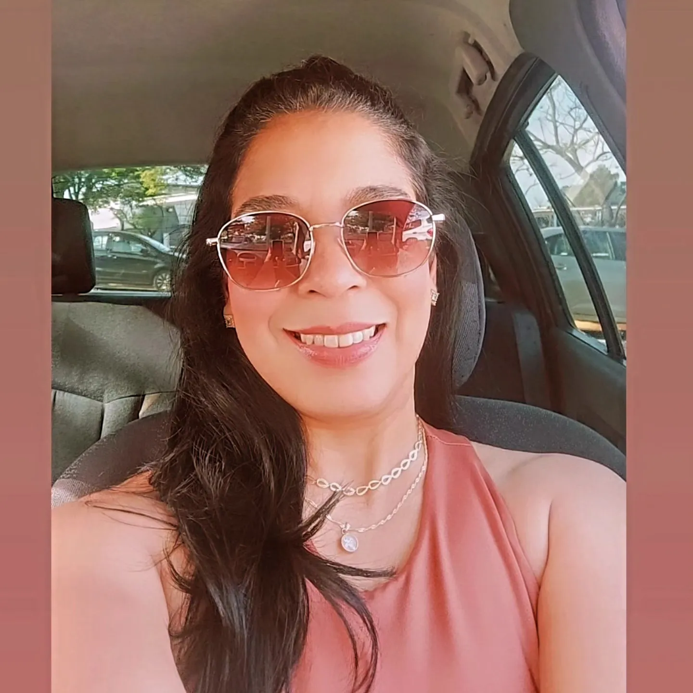

Minha História
Onde tudo começou
"Tudo começou com amor. Amor pelo crochê, pelos detalhes feitos à mão e pela alegria de transformar um simples fio em algo único e especial."
Comecei fazendo minhas primeiras peças para presentear pessoas que amo. Cada bolsa era feita com carinho, paciência e muitos pontos, e em cada um eu colocava um pedacinho de mim.
Aos poucos, essa paixão foi ganhando novos caminhos. As peças chegaram a outras pessoas, levando beleza, estilo e também o carinho e a dedicação que existem por trás de cada trabalho artesanal.
Foi assim que nasceu a Crochetando com Amor: um sonho construído ponto a ponto, com as mãos, o coração e muita dedicação.
Hoje, cada peça carrega uma história: a minha, o meu amor pelo crochê e o desejo de que cada pessoa que recebe uma peça sinta todo o carinho que coloquei em cada ponto.
